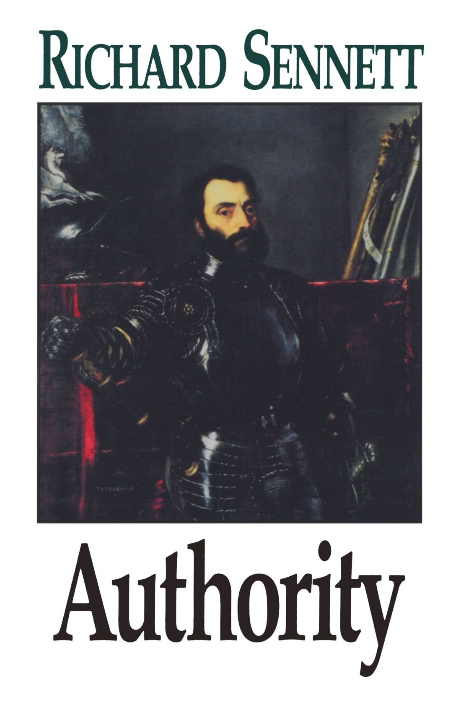

Ambivalence Towards Authority - Richard Sennett
Response to Class Discussion
What I heard today is a deep suspicion of political authority (e.g., our representatives, government servants, even middle managers) and concern that genuine scientific authority is nary to be found.
I also heard you say that the scientific virtues often appear to be a pretense, given the apparent abundance of profit-seeking individuals and/or self-serving institutions. You resent the lack of consequences for scientists and politicians that operate irresponsibly. Richard Merton's scientific ethos - universalism, sharing, universalism, and disinterested - have been trampled by the values of the political sphere (power, coercion) or the economic sphere (efficiency, profit).
On the inter-personal level, genuine authoritative figures who are worthy of respect, and who have your interests (or society's interests) at heart, are rare. The only professionals who generally fit the bill are therapists and psychiatrists.
On the societal level, you already have some experience of the impersonal technocratic bureaucracy that Kafka seems to be writing about.
Some good questions for your Notebook might be:
How, operationally, in daily life, can a person distinguish between power and authority?
How may one distinguish between genuine authority and fraudulent/deceptive authority?
Last night I re-read several sections of the book Authority by Richard Sennett. He says numerous things that are germane to our discussion today. The following is a midrash of his words and ideas.
The need for authority is basic.
Children need authorities to guide and reassure them. Adults fulfill an essential part of themselves in being authorities; it is one way of expressing care for others.
There is a persistent fear that we will be deprived of this experience ... that authority is weakening or breaking down. And, yet, in the family and society at large, we have come to fear the influence of authority as a threat. The fear is what the superior would do with that power. But people do need other people's strength, and sometimes we feel that the actual figures of authority in our lives are not as strong as they should be (the image of a pathetic father).
Sennet speaks of two broad types of fraudulent/deceptive authority.
Paternalism, an authority of false love.
What a child learns about its parents' protectiveness is not what a young adult will learn about a boss. The fatherly attitude of a manager can mean loss of freedom for employees. A child does not need to be ashamed of itself when it obeys its parents, but it can be shameful when one adult treats another in a parental manner.
When an authority figure comes in the image of paternalism, resistance makes the superior's benevolent ego feel exposed. The care for others is the authority's gift, and this care will be bestowed only so long as it serves the authority's interests.
Autonomy, an authority without love.
At the other extreme are images of authority that make no pretense of care. They are images of an autonomous person who is needed by others more than he or she needs them. When an authority is needed by others more than he needs them, he can afford to be indifferent to them. If the bureaucrat ignores the distress of the welfare client filling out complicated forms, if the doctor treats his clients like bodies rather than persons, these very acts of indifference maintain dominance.
In the complex managerial form of autonomy that one might experience as an employee, a superior who keeps his cool when others make demands of him can, in this way, keep the upper hand. Of course, few people set out to be rude or callous. But autonomy removes the necessity of dealing with other people openly and mutually.
In the book review below John H. Scharr writes that Authority by Richard Sennett is a book with many virtues. He then says:
And yet I must say that the book seems to me to be off center. Are paternalistic and autonomous authority really the typical, characteristic forms and structures in which malignant authority appears in modern society? What about the legions of technical and scientific experts who authoritatively set so much of the direction and content of modern life with their cannon of efficiency and their subservience to profit and power? What about the huge military, police, and spy forces which claim to defend us against our enemies, open and hidden? What about the apparatus of the "helping professions," with their claims to manage larger and larger groups of people as deviants and problems.
The last several sentences sound very much like what you shared with me today.
Further Reading
- This is Shaar's book review:
- Sennett, Richard (1993). Authority. W.W. Norton and Company.
